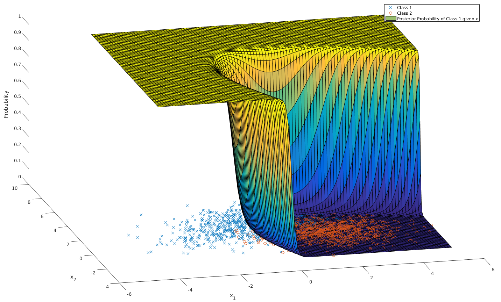
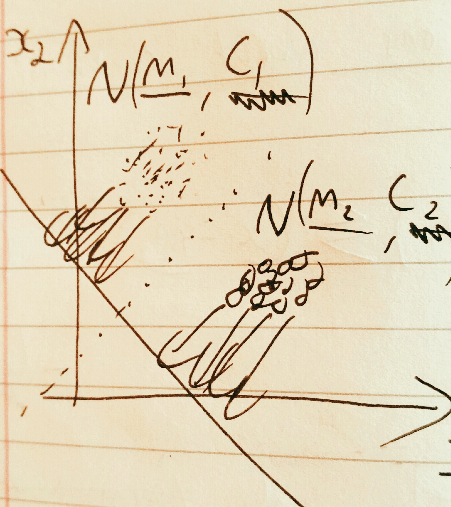

Machine Learning Revision
Table of Contents
1 About This Document
This document contains my revision notes for COMP3206 Machine Learning as taught by Professor Mahesan Niranjan at the University of Southampton. This work was produced based on his lectures but any inaccuracies and misunderstandings contained herein are almost certainly my own mistake. This does not represent the whole module, only what I expect to find on the exam.
This document my be distributed under the terms of the GNU Free Documentation Licence. A copy of the licence can be found here.
2 Maths Review
This section very briefly reviews some of the maths needed for the rest of the document.
2.1 Matrices and Vectors
2.1.1 Basics
A vector:
\begin{equation*} \mathbf{x} = \begin{pmatrix} x_1 \\ x_2 \\ x_3 \\ \vdots \\ x_N \end{pmatrix} \end{equation*}A matrix:
\begin{equation*} \mathbf{A} = \begin{pmatrix} a_{11} & a_{12} & \cdots & a_{1n} \\ a_{21} & a_{22} & \cdots & a_{2n} \\ \vdots & \vdots & \vdots & \vdots \\ a_{m1} & a_{m2} & \cdots & a_{mn} \\ \end{pmatrix} \end{equation*}Matrix Multiplication:
\begin{equation*} [\mathbf{A}\mathbf{B}]_{ij} = \sum_{k=1}^n A_{ik}B_{kj} \end{equation*}Scalar product of vectors: (where θ is the angle between the vectors)
\begin{equation*} \mathbf{x} \cdot \mathbf{y} = \sum_{i = 1}^{N} x_i y_i = \mathbf{x}^T \mathbf{y} = |\mathbf{x}| |\mathbf{y}| \cos(\theta) \end{equation*}This can be used to project \(\mathbf{x}\) along the direction \(\mathbf{u}\):
\begin{equation*} \mathrm{projection} = \frac{\mathbf{x}^T \mathbf{u}}{|\mathbf{u}|}\mathbf{u} \end{equation*}As an example of matrix algebra: a diagonal matrix is a scalar multiple of the identity matrix. A diagonalizable matrix can be written in erms of a diagonal matrix \(\mathbf{D}\) and some transformation matrix \(\mathbf{S}\) as follows:
\begin{equation*} \mathbf{A} = \mathbf{SDS}^{-1} = \mathbf{S}a\mathbf{IS}^{-1} \end{equation*}Using this relationship, a diagonalizable matrix can be efficiently raised to a power using
\begin{equation*} \mathbf{A}^n = \mathbf{SD}^n\mathbf{S}^{-1} = \mathbf{S}a^n\mathbf{IS}^{-1} \end{equation*}To prove this by induction for \(n \in \mathbb{N}\):
\begin{align*} \mathbf{A}^1 =& \mathbf{SD}^1\mathbf{S}^{-1} \\ \mathrm{Assume } \: \mathbf{A}^n =& \mathbf{SD}^n\mathbf{S}^{-1} \\ \mathbf{A}^{n+1} = \mathbf{A}^n\mathbf{A} =& \mathbf{SD}^n\mathbf{S}^{-1}\mathbf{SD}\mathbf{S}^{-1} \\ =& \mathbf{SD}^n\mathbf{D}\mathbf{S}^{-1} \\ =& \mathbf{SD}^{n+1}\mathbf{S}^{-1} \\ \end{align*}2.1.2 Linear Transformation
Following from the definition of matrix multiplication, linear transformations on vectors can be represented using a matrix. For example, a vector \(\mathbf{x} \in \mathbb{R}^2\) can be rotated by θ by multiplying with a matrix to give a new vector \(\mathbf{r} \in \mathbb{R}^2\).
\begin{equation*} \mathbf{r} = \begin{pmatrix} \cos(\theta) & -\sin(\theta) \\ \sin(\theta) & \cos(\theta) \\ \end{pmatrix} \mathbf{x} \end{equation*} \begin{equation*} |\mathbf{x}| = |\mathbf{r}| \end{equation*}A special case of these linear transformations is to only scale the vector by some amount \(\lambda\):
\begin{equation*} \mathbf{Ax} = \lambda \mathbf{x} \end{equation*}For a matrix \(\mathbf{A}\), the vectors \(\mathbf{x}\) and scalars \(\lambda\) which satisfy this equation are called eigen vectors and eigen values, respectively. They can be found by the following method:
\begin{align*} \mathbf{Ax} =& \lambda \mathbf{x} \\ \mathbf{Ax} - \lambda \mathbf{x} =& 0 \\ (\mathbf{A} - \lambda\mathbf{I})\mathbf{x} =& 0 \end{align*}For non-trivial results:
\begin{align*} \mathrm{det}(\mathbf{A} - \lambda\mathbf{I}) = 0 \end{align*}As another example of a linear transformation, take a vector \(\mathbf{u} \in \mathbb{R}^d\) and from it construct the matrix \(\mathbf{P} = \mathbf{uu}^T\). The first interesting property of this matrix is that multiplying it with any vector will make a vector which points in the direction of \(\mathbf{u}\):
\begin{align*} \mathbf{Px} = \mathbf{uu}^T\mathbf{x} = \mathbf{u}(\mathbf{u}\cdot\mathbf{x}) = \mathbf{u}a \end{align*}This works because the dot product results in a scalar (written as \(a\)).
Another use for \(\mathbf{P}\) is to construct \((2\mathbf{P} - \mathbf{I})\), which will reflect around \(\mathbf{u}\):
\begin{align*} (2\mathbf{P} - \mathbf{I})\mathbf{x} &= 2\mathbf{Px} - \mathbf{x} \\ &= 2\mathbf{u}(\mathbf{u}\cdot\mathbf{x}) - \mathbf{x} \end{align*}To see this, it helps to plot it.
2.2 Calculus
2.2.1 Basics
For a function \(f\: : \: \mathbb{R}^N \to \mathbb{R}\)
\begin{equation*} \mathbf{\nabla f} (\mathbf{x}) = \begin{pmatrix} \frac{\partial f}{\partial x_1} \\ \frac{\partial f}{\partial x_2} \\ \vdots \\ \frac{\partial f}{\partial x_N} \\ \end{pmatrix} \end{equation*}\(\mathbf{\nabla}\) should be thought of as the vector gradient of \(f\).
For example, consider \(f(\mathbf{x}) := \mathbf{x}^T\mathbf{Ax}\), \(\mathbf{x} \in \mathbb{R}^2\), where \(\mathbf{A}\) is symmetric (\(A_{21} = A_{12}\))
\begin{align*} \mathbf{\nabla f} &= \begin{pmatrix} \frac{\partial f}{\partial x_1}\left( x_1^2A_{11} + 2x_1x_2A_{21} + x_2^2A_{22} \right) \\ \frac{\partial f}{\partial x_2}\left( x_1^2A_{11} + 2x_1x_2A_{21} + x_2^2A_{22} \right) \\ \end{pmatrix} \\ &= \begin{pmatrix} 2x_1A_{11} + 2x_2A_{21} \\ 2x_2A_{22} + 2x_1A_{21} \\ \end{pmatrix} \\ &= 2\mathbf{Ax} \end{align*}Similarly, \(\mathbf{H}\) (the hessian matrix). This represents the local curvature of a function \(f\: : \: \mathbb{R}^N \to \mathbb{R}\) using second order partial derivatives. The hessian matrix can be defined as
\begin{equation*} H_{ij} = \frac{\partial^2 f}{\partial x_i \partial x_j} \end{equation*}2.2.2 Optimisation
- Unconstrained
For example \(\min f(\cdot)\)
A commonly used iterative method is gradient decent:
\begin{equation*} \mathbf{x}^{(n+1)} = \mathbf{x}^{(n)} - \eta \mathbf{\nabla f(\mathbf{x})} \end{equation*}Gradient decent is like taking the path down the gradient to the bottom of the metaphorical hill.
Newton's method converges faster than gradient decent but is also far more computationally intensive
\begin{equation*} \mathbf{x}^{(n+1)} = \mathbf{x}^{(n)} - \mathbf{H}^{-1}\mathbf{f(\mathbf{x})} \end{equation*} - Constrained - Lagrange Multipliers
To minimise \(f \: : \: \mathbb{R}^n \to \mathbb{R}\) subject to conditions \(g_i \: : \mathbb{R}^{d_i} \to \mathbb{R} = 0, \: d_i\leq n, \: i = 1, 2, \dots, m\), define \(F \: : \: \mathbb{R}^{n+m} \to \mathbb{R} \: := f(\cdot) - \sum_{i=1}^{N}\lambda_i g_i(\cdot)\). The minimum (or maximum) will be at \(\mathbf{\nabla F} = \mathbf{0}\).
Example: Minimise \(f(x,y)=xy\) subject to \(x^2+y^2=8\)
\begin{align*} &g(x,y) = x^2+y^2-8 \\ &F(x,y,\lambda) = xy - \lambda(x^2+y^2-8) \\ &\mathbf{\nabla F}(x,y,\lambda) = \mathbf{0} \\ &\frac{\partial F}{\partial x} = y - 2\lambda x = 0 \\ &\frac{\partial F}{\partial y} = x - 2\lambda y = 0 \\ &\therefore x = y \\ &\frac{\partial F}{\partial \lambda} = x^2 + y^2 -8 = 0 \\ &\therefore 2x^2 - 8 = 0 \\ &\therefore x = y = \pm 2 \end{align*}So there are minima subject to the constraint at \((2,2)\) and \((-2, -2)\).
2.3 Probability
2.3.1 Bayes Theorem
For \(N\) classes
\begin{equation*} P[Y|X] = \frac{P[X|Y]P[Y]}{\sum_{i=1}^{N} P[X|Y_i] P[Y_i]} \end{equation*}2.3.2 Multivariate Gaussian
For a mean \(\mathbf{m} \in \mathbb{R}^p\) and co-variance matrix \(\mathbf{C} \in \mathbb{R}^{p \times p}\)
\begin{equation*} p(\mathbf{x}) = \frac{1}{\sqrt{(2\pi)^p \mathrm{det}(\mathbf{C})}}\exp\left(-\frac{1}{2}(\mathbf{x} - \mathbf{m})^T\mathbf{C}^{-1}(\mathbf{x} - \mathbf{m})\right) \end{equation*}The normal (gaussian) distribution can be linearly transformed as so:
\begin{align*} \mathbf{x} \sim& \mathcal{N}(\mathbf{m}, \mathbf{C}) \\ \mathbf{Ax} \sim& \mathcal{N}(\mathbf{Am}, \mathbf{ACA}^T) \end{align*}3 Supervised Learning
3.1 Function Approximation
3.1.1 Linear Regression
Multivariate linear regression is concerned with learning a function \(f \: : \: \mathbb{R}^p \to \mathbb{R}\) such that the function predicts some useful variable from the inputs. For example, predicting housing prices from the size of the house and it's distance from a school.
In linear regression we use a function of the form
\begin{equation*} f(\mathbf{x}) := \mathbf{w}^T\mathbf{x} + w_0 \end{equation*}For convenience we will work in \(p+1\) dimensional space:
\begin{align*} &\mathbf{y} = (\mathbf{x} \quad 1)^T \\ &\mathbf{a} = (\mathbf{w} \quad w_0)^T \\ &f = \mathbf{y}^T\mathbf{a} \\ \end{align*}The function \(f\) forms our model, we have some training data \(\{\mathbf{y}_n, f_n\}_{n=1}^N\) and from it we are trying to learn \(\mathbf{a}\). Alternately, the inputs and outputs can also be written as \(\mathbf{Y}\): an \(N\times(p+1)\) matrix in which the nth row is \(\mathbf{y}_n^T\) and \(\mathbf{f}\): an \(N\)-dimensional vector of the outputs.
To learn \(\mathbf{a}\), construct a squared distance error function:
\begin{equation*} E = \sum_{n=1}^N (\mathbf{y}_n^T\mathbf{a} - f_n)^2 = |\mathbf{Ya}-\mathbf{f}|^2 \end{equation*}The error function should be minimised with respect to \(\mathbf{a}\).
- Analytic Solution
As \(E\) is quadratic in \(\mathbf{a}\) and positive valued, we can be sure that the one turning point will be the global minimum.
To find this turning point, equate the differential of \(E\) with respect to \(\mathbf{a}\) to zero.
\begin{align*} \mathbf{\nabla_a} E &= 0 \\ &= 2\mathbf{Y}^T(\mathbf{Ya} - \mathbf{f}) \\ \therefore \mathbf{Y}^T\mathbf{Ya} &= \mathbf{Y}^T\mathbf{f} \\ \therefore \mathbf{a} &= (\mathbf{Y}^T\mathbf{Y})^{-1}\mathbf{Y}^T\mathbf{f} \\ \end{align*}The problem with this solution is that matrix inversion is an \(O(n^3)\) problem and the dataset used to construct \(\mathbf{Y}\) will typically be very large.
- Gradient Decent
A less computationally expensive method is to use gradient decent:
Initialise a randomly Update a[k+1] = a[k] - eta*dE(a) Until Convergence
Where \(\mathrm{dE}\) is \(\mathbf{\nabla_a}E\) and eta is a small scalar (increasing \(\eta\) leads to faster convergence up to a point, after which the function may not converge at all, decreasing \(\eta\) is slower but is more likely to find the minimum).
- Newton's Method
The solution can also be found using Newton's method. Newton's method will converge a lot faster than gradient decent but computing and inverting \(\mathbf{H}\) could be computationally expensive.
Initialise a randomly Update a[k+1] = a[k] - eta*invHdE(a) Until Convergence
Where \(\mathrm{invHdE}\) is \(\mathbf{H}^{-1}\mathbf{\nabla_a}E\).
- Regularisation
The problem of finding \(\mathbf{a}\) my not have a unique solution: it may not be a well-posed problem. Therefore, it is helpful to apply regularisation to constrain the solution. One way of doing this is by using a quadratic regulariser.
The quadratic regulariser works by adding an additional term to the error function to constrain the magnitude of \(\mathbf{a}\):
\begin{equation*} E = |\mathbf{Ya}-\mathbf{f}|^2 + \gamma|\mathbf{a}|^2 \end{equation*}Where \(\gamma\) is a small scalar which controls the trade off between regularisation and fitting the training set.
This can then be fed into each solution method we have seen so far. For example the analytical can be obtained as follows:
\begin{align*} \mathbf{\nabla_a}E &= 0 \\ &= 2\mathbf{Y}^T(\mathbf{Ya}-\mathbf{f})+2\gamma\mathbf{Ia} \\ (\mathbf{Y}^T\mathbf{Y} + \gamma\mathbf{I})\mathbf{a} &= \mathbf{Y}^T\mathbf{f} \\ \therefore \mathbf{a} &= (\mathbf{Y}^T\mathbf{Y}+\gamma\mathbf{I})^{-1}\mathbf{Y}^T\mathbf{f} \\ \end{align*}This regularisation may lead to \(\mathbf{a}\) being a sparse matrix. This indicates which variables are actually important.
3.2 Classification
3.2.1 Bayesian Decision Theory
I will only consider gaussian distributed data. This is common because of the Central Limit Theorem. The aim is to learn the mean and co-variance for each class. Data can then be assigned to the most probable class.
We assume that we know the classes \(\omega_i, \, i=1,\dots,k\) and class probabilities \(P[\omega_i]\) a priori.
Training data tells us \(p(\mathbf{x} | \omega_i)\).
Formally, the decision rule is to find \(j\) such that
\begin{equation*} \max_j \left(P[\omega_j | \mathbf{x}]\right) \end{equation*}Using Bayes Theorem
\begin{equation*} P[\omega_j|\mathbf{x}] = \frac{p(\mathbf{x}|\omega_j)P[\omega_j]}{\sum_{i=1}^{k} P[\mathbf{x}|\omega_i] P[\omega_i]} \end{equation*}The denominator is constant with respect to \(j\) and so is unimportant for the maximum. Therefore the decision rule can be simplified to
\begin{equation*} \max_j \left( p(\mathbf{x}|\omega_j)P[\omega_j] \right) \end{equation*}The decision rule can be further simplified. For simplicity I will consider the two class case (\(k=2\)).
\begin{align*} p(\mathbf{x}|\omega_1)P[\omega_1] &\lessgtr p(\mathbf{x}|\omega_2)P[\omega_2] \\ \frac{1}{\sqrt{(2\pi)^p\mathrm{det}(\mathbf{C_1})}}\exp\left( -\frac{1}{2}(\mathbf{x} - \mathbf{m}_1)^T\mathbf{C_1}^{-1}(\mathbf{x} - \mathbf{m}_1) \right)P[\omega_1] &\lessgtr \frac{1}{\sqrt{(2\pi)^p\mathrm{det}(\mathbf{C_2})}}\exp\left( -\frac{1}{2}(\mathbf{x} - \mathbf{m}_2)^T\mathbf{C_2}^{-1}(\mathbf{x} - \mathbf{m}_2) \right)P[\omega_2] \end{align*}From this point we can get a few different classifiers, depending upon the assumptions we make. At first I will assume that the classes share a common co-variance matrix which shows no correlation of the variables (\(\mathbf{C} \propto \mathbf{I}\)) and that the prior probabilites of each class are equal.
\begin{align*} (\mathbf{x} - \mathbf{m}_1)^T\mathbf{C}^{-1}(\mathbf{x} - \mathbf{m}_1) &\lessgtr (\mathbf{x} - \mathbf{m}_2)^T\mathbf{C}^{-1}(\mathbf{x} - \mathbf{m}_2) \\ (\mathbf{x} - \mathbf{m}_1)^T(\mathbf{x} - \mathbf{m}_1) &\lessgtr (\mathbf{x} - \mathbf{m}_2)^T(\mathbf{x} - \mathbf{m}_2) \\ |\mathbf{x} - \mathbf{m}_1| &\lessgtr |\mathbf{x} - \mathbf{m_2}| \end{align*}This is a distance to mean classifier. To recap, to get to a distance to mean classifier, we had to assume that the variables were multivariate-gaussian distributed, with equal co-variance matrices with no correlation, equal prior class probabilities and distinct means.
A slightly more general classifier can be obtained by relaxing the assumptions that the co-variance matrices have no correlation and that the prior probabilities are equal.
\begin{align*} (\mathbf{x} - \mathbf{m}_1)^T\mathbf{C}^{-1}(\mathbf{x} - \mathbf{m}_1) + \log\left(\frac{P[\omega_1]}{P[\omega_2]}\right) &\lessgtr (\mathbf{x} - \mathbf{m}_2)^T\mathbf{C}^{-1}(\mathbf{x} - \mathbf{m}_2) \\ (\mathbf{x} - \mathbf{m}_1)^T\mathbf{C}^{-1}(\mathbf{x} - \mathbf{m}_1) -(\mathbf{x} - \mathbf{m}_2)^T\mathbf{C}^{-1}(\mathbf{x} - \mathbf{m}_2) + \log\left(\frac{P[\omega_1]}{P[\omega_2]}\right) &\lessgtr 0 \\ \mathbf{x}^T\mathbf{C}^{-1}\mathbf{x} -2\mathbf{m_1}^T\mathbf{C}^{-1}\mathbf{x} + \mathbf{m_1}^T\mathbf{C}^{-1}\mathbf{m_1} - \mathbf{x}^T\mathbf{C}^{-1}\mathbf{x} + 2\mathbf{m_2}^T\mathbf{C}^{-1}\mathbf{x} - \mathbf{m_2}^T\mathbf{C}^{-1}\mathbf{m_2} + \log\left(\frac{P[\omega_1]}{P[\omega_2]}\right) &\lessgtr 0 \\ 2(\mathbf{m_2} - \mathbf{m_1})^{T}\mathbf{C}^{-1}\mathbf{x} + \left[ \mathbf{m_1}^T\mathbf{C}^{-1}\mathbf{m_1} - \mathbf{m_2}^T\mathbf{C}^{-1}\mathbf{m_2} + \log\left(\frac{P[\omega_1]}{P[\omega_2]}\right) \right] &\lessgtr 0 \\ \end{align*}This is also a linear classifier because the assumption that the co-variance matrices are the same allowed the quadratic terms to cancel. This may also be considered as a distance to template classifier (as with the distance to mean classifier) except here we are using Mahalanobis distance instead of euclidean distance.
Relaxing that assumption (leaving only the assumption that the data are normally distributed) would lead to a quadratic classifier.
A similar application is to calculate the posterior probability of a gaussian distributed variable: (assuming that class 1 is not impossible)
\begin{align*} P[\omega_1 | \mathbf{x}] &= \frac{p(\mathbf{x} | \omega_1)P[\omega_1]}{\sum_{i=1}^k p(\mathbf{x} | \omega_i)P[\omega_i]} \\ &= \frac{1}{1 + \sum_{i=2}^k \frac{p(\mathbf{x} | \omega_i)P[\omega_i]}{p(\mathbf{x} | \omega_1)P[\omega_1]}} \\ &= \frac{1}{1 + \sum_{i=2}^k \frac{P[\omega_i]\sqrt{\mathrm{det}(\mathbf{C}_1)}}{P[\omega_1]\sqrt{\mathrm{det}(\mathbf{C}_i)}}\exp\left[ (\mathbf{x} - \mathbf{m}_i)^T\mathbf{C_i}^{-1}(\mathbf{x} - \mathbf{m}_i) -(\mathbf{x} - \mathbf{m}_1)^T\mathbf{C_1}^{-1}(\mathbf{x} - \mathbf{m}_1) \right]} \\ \end{align*}As we saw previously, when the co-variances are equal, the exponential will be linear in \(\mathbf{x}\):
\begin{align*} P[\omega_1 | \mathbf{x}] &= \frac{1}{1 + \sum_{i=2}^k \frac{P[\omega_i]\sqrt{\mathrm{det}(\mathbf{C}_1)}}{P[\omega_1]\sqrt{\mathrm{det}(\mathbf{C}_i)}}\exp\left[\mathbf{w}^T\mathbf{x} + \mathbf{w}_0\right]} \\ \end{align*}For a two class problem, this is an obvious case of a sigmoidal function. For more classes or for a quadratic class boundary (distinct co-variance matrices), the plot still looks intuitively sigmoidal. For example, here is a 3D plot for two classes with different co-variance matrices:

3.2.2 Fisher Linear Discriminant Analysis
The idea behind fisher linear discriminant analysis is to project a higher dimensional problem which is hard to separate onto a lower dimensional surface which has chosen so as to maximise separability.

Considering the pictured problem of projecting a 2D problem onto 1D, the trick is to pick the gradient \(\mathbf{\omega} \in \mathbb{R}^d\) of the line so as to create maximal separability of classes. This can be captured by the fisher ratio: (recall that the scalar product projects one vector onto another)
\begin{equation*} J_F := \frac{(\mathbf{\omega}^T\mathbf{m}_1 - \mathbf{\omega}^T\mathbf{m}_2)^2}{\mathbf{\omega}^T\mathbf{C}_1\mathbf{\omega} + \mathbf{\omega}^T\mathbf{C}_2\mathbf{\omega}} \end{equation*}The fisher ratio can be thought of as the distance of the means divided by the variance on the line. Maximising this will make the points maximally separable because the means will have the greatest distance and the points will have as little spread about the mean as possible.
Another way of writing \(J_F\) is as a ratio of quadratic forms
\begin{align*} \mathbf{S_B} :=&\, (\mathbf{m}_1 - \mathbf{m}_2)(\mathbf{m}_1-\mathbf{m}_2)^T \\ \mathbf{S_W} :=&\, \mathbf{C}_1 + \mathbf{C}_2 \\ \therefore J_F =&\, \frac{\mathbf{\omega}^T\mathbf{S_B}\mathbf{\omega}}{\mathbf{\omega}^T\mathbf{S_W}\mathbf{\omega}} \end{align*}So to maximise \(J_F\):
\begin{align*} \frac{\partial J_F}{\partial \mathbf{\omega}} &= \mathbf{0} \\ &= \frac{2\mathbf{S_B\omega}(\mathbf{\omega}^T\mathbf{S_W\omega}) - 2\mathbf{S_W\omega}(\mathbf{\omega}^T\mathbf{S_B\omega})}{(\mathbf{\omega}^T\mathbf{S_W\omega})^2} \\ \end{align*}It is only the direction of \(\mathbf{\omega}\) which matters so we can just combine the scalars:
\begin{align*} \mathbf{S_B\omega}-\alpha_0\mathbf{S_W\omega} &= \mathbf{0} \\ \therefore \mathbf{S_W\omega} &= \alpha\mathbf{S_B\omega} \\ \end{align*}Note that
\begin{equation*} \mathbf{S_B\omega} = (\mathbf{m}_1 - \mathbf{m}_2)(\mathbf{m}_1-\mathbf{m}_2)^T\mathbf{\omega} = (\mathbf{m}_1 - \mathbf{m}_2)\alpha_1 \end{equation*}And so points in the same way as \(\mathbf{m}_1 - \mathbf{m}_2\). From this we have an equation for \(\omega\)
\begin{equation*} \mathbf{\omega} = \alpha_2(\mathbf{C_1} + \mathbf{C_2})^{-1}(\mathbf{m}_1 - \mathbf{m}_2) \end{equation*}Once projected onto this line, data should be more easily separable using Bayesian Decision Theory.
3.2.3 Perceptron
Perceptron follows a similar process to linear regression except the output is discrete: \(f \: : \: \mathbb{R}^p \to \{1, -1\}\). Our model is
\begin{equation*} f(\mathbf{x}) := \begin{cases} +1 & \mathbf{w}^T\mathbf{x} + w_0 \geq 0 \\ -1 & \mathbf{w}^T\mathbf{x} + w_0 < 0 \end{cases} \end{equation*}Note that the output when the model gives zero is arbitrary.
As with linear regression we will use \(\mathbf{w}^T\mathbf{x} + w_0 \equiv \mathbf{y}^T\mathbf{a}\).
The intuitive choice for an error function is to count the number of missclassifications. However, this would create an function which steps discretely (looking like stairs). This is piecewise constant and so cannot be differentiated and so is hard too minimise. Instead we will use the the sum of function outputs across the set of unclassified items \(\mathbb{U}\).
\begin{equation*} E = -\sum_{\mathbb{y}_n \in \mathbb{U}}\mathbf{y}_n^T\mathbf{a} \end{equation*}This may then be minimised using stochastic gradient decent. First the derivative:
\begin{equation*} \mathbf{\nabla_a}E = -\sum_{\mathbb{y}_n \in \mathbb{U}}\mathbf{y}_n \end{equation*}Therefore, using randomly chosen \(\mathbf{y}_n\) we can update like this
\begin{equation*} \mathbf{a}^{(k+1)} = \mathbf{a}^{(k)} + \mathbf{y}_n \end{equation*}